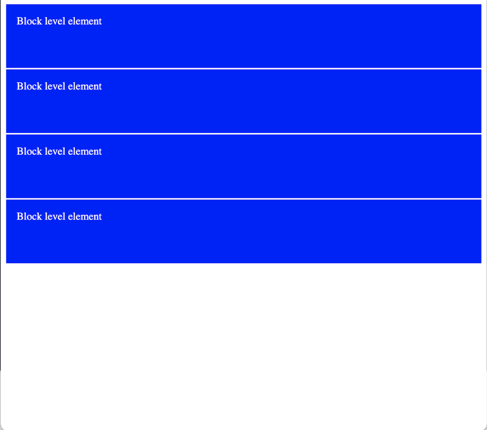
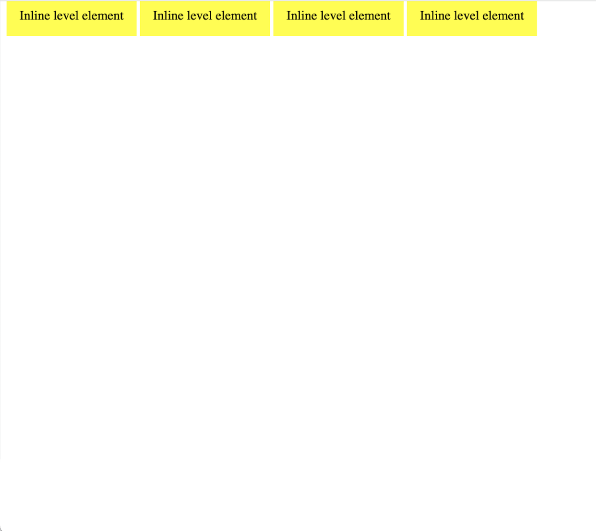
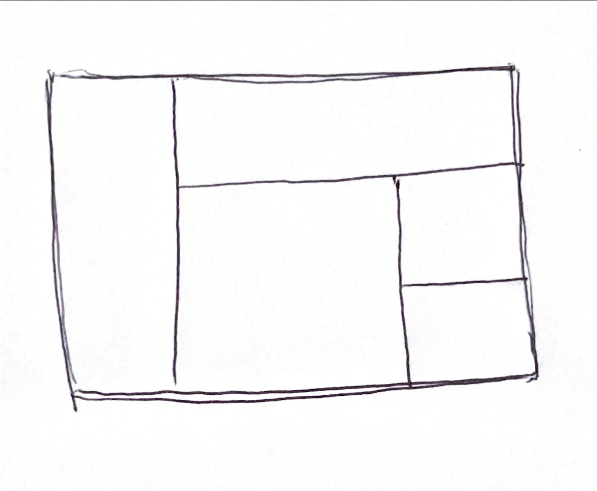

CSS Grid, Flex, and Responsive Design
CSS Layout: Flexbox, Grid, Positioning
CSS: Recap
CSS is written in declarations
background-color: blue;
This is made up of a property and a value
Remember there are three ways to write CSS:
- Inline
- Internal
- External
Keep in mind:
- Generally you don't want to use inline styles. CSS is much more powerful when you're using selectors.
- CSS is all about layering styles and using nested HTML elements.
HTML Recap: Block vs. Inline
When we're talking about how HTML elements display, there are two main types: block-level elements and inline elements.
Display Property
display: block
display: inline
display: inline-block
display: none
Position Property
position: static
position: fixed
position: relative
position: absolute
Making Layouts Responsive
This will make your code change style at different screen widths
@media only screen and (max-width: 600px) {
body {
background-color: lightblue;
}
}
More CSS Layout Resources click to Look more at Grid and Flexbox
CSS Layout Coding Challenge!
Start by sketching out a simple layout that you can use as a reference. Label each section with it's html tag to help with coding structure.
Your sketch might look something like this:
- Code the HTML
- Code the CSS using grid / flex display properties. Style the boxes so you can distinguish each section by using background color or borders
- Add any content if time permits